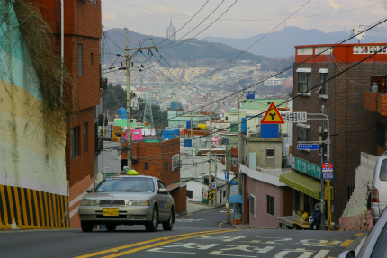
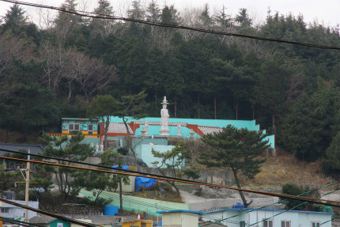
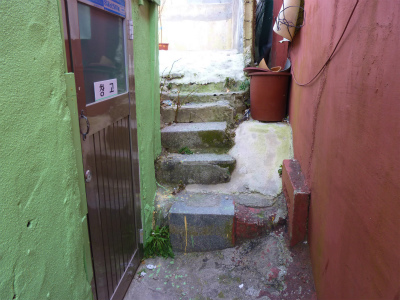
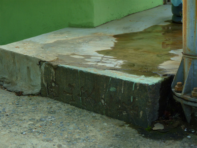

釜山のマチュピチュ、甘川洞の東側は峨嵋洞（アミドン）といい、ここもまたまた急斜面にかなり無茶をして大量の家屋が建てられている地域である。

ここもご覧のような車の通れる道はごくわずか。ほとんどが道とも言えない家と家の隙間を縫って歩くような場所ばかり。
山の上に大仏さんが見える。
いつもなら大仏を見てスルーすることなどありえないのだがどこをどうやったら辿り着けるのかさっぱり判らないので泣く泣く諦める。

韓国の大仏さんはこのように頭上に塔を乗せているタイプが多い。
今回はちゃんとした寺巡りをしていないのでいつか韓国を再訪した際に触れることであろうぞ。
で、峨嵋洞に話を戻す。
一歩路地を入るとこんな感じ。
治安が悪いとは思えないが、いわゆるスラム状の住宅密集地である。
この街の歴史は先ほどの甘川洞と同じく朝鮮戦争下における避難民が作った街だ。
もちろん家は急ごしらえだし、着の身着のまま、何の財産も持たず逃げてきた人達が住み着いた街だけにムリクリ感は否めない。
そんな戦火から逃れてきた人達が住みつく峨嵋洞にはかつて日本人の墓地があった。
峨嵋洞の山の下には終戦まで日本人の居留地があったのだ。
そんな名残が街のあちこちに見られる。
石垣や石段のあちこちに日本人の残した墓石が使われている。
前述のとおり、着の身着のままで戦火から逃れてきた人が主のいない墓地に住む。
その際、製材された石が目の前にあったので拝借しちゃった、ということになろう。
日本人としてはショッキングな光景だが当時の事情もあることだし、捨てるよりは有効利用されているだけいいのかな、と思うことにする。
街のあちこちに墓石が使われていた。
建物の基壇部に墓石が使われている。昭和九年建立の墓石だ。
その下には施主の名前の一部も見える。
迷路のような狭い道が延々と続く。平衡感覚がどんどんおかしくなって来る程のロケーションだ。
たまに視界が開け、下界が見える。
遠くの高層住宅やビルが絵空事のように思えてくるほど立体迷宮のような街並み。
これも墓石の一部だ。

結構がっちりした擁壁も…
角の石をみれば…
逆さになっているが「家之」という字が見える。もちろん「〇〇家之墓」の一部だ。
昭和十六年に建立された墓石だ。
この時期、釜山市の総人口は約21万人。そのうち約6万人が日本人（当時でいうところの内地人）であったという。
これだけ多くの日本人が住んでいれば墓の数も相当あっただろう。そしてその大半が放棄されたと考えられえる。
壁にめり込んでいる石。
見ればやっぱり墓石だった。
花崗岩系で四角く製材されているものはかなりの確立で墓石だった。
↓階段の一段目、これも墓石の台石ですね。

各家屋にはトイレがないのだろうか、共同便所があちこちに設けられていた。
その便所の傍らにも…
墓石が使われていた。

私はここで墓石を建材に再利用することの是非を問うつもりは毛頭ない。
已むに已まれず墓石を残して帰国した人にも、已むに已まれず墓石を土台に家を建てた人にもそれぞれ理由があるのだろうから。
ただ、この地にはかつて日本人が数多く住み、その痕跡が今でも残っている、という事実が厳然として存在することを知っていただきたい。
日本と切り離すことの出来ないのっぴきならない因縁で結ばれている土地なのだ、ということを強烈に感じた。
墓石云々を抜きにしてもこの住宅密集地は中々味わい深い。
なかでも猛烈だったのはこの家。
外装材が100%トタンで出来ているトタン御殿。
壁には何かメッセージが書かれ、建物全体からむき出しの敵対心が放たれているように思えた。
坂を下ってくると段々普通の町並みになってきて、瓦屋根のものものしい家もチラホラ。
↓かつての日本家屋だろうか。
寺もあった。
「峨嵋洞山神堂」という額のかかった門には鍵が掛かっており中の様子は伺い知れなかった。
途中、外壁を塗りかえている家があった。
隣家との境は通路になっているのでもちろん足場はその通路を全面使って組んである。
従ってそこから先に行くには組んである足場の中を通る事になる。
ゲ！上からペンキがべたべた落ちてくるぞ！
ペンキの雨をすり抜け上を見上げると、オバちゃん手でペンキを直接塗ってるじゃないか…
建物と道がどんどん同じ色になってるぞ。
そんなこんなで坂を降りてくると斜面も緩くなってきて段々車の喧騒も聞こえてきた。
まるで抜け出すことの出来ない迷宮のようだったが、あっけなく平坦な街に出た。
何時間でもウロウロしていたい、そんな魅力的な街だった。
魚を干している家が多かったんで結構臭いはキツ目でした…
洗濯物と干し魚のコラボ。臭いが心配…。
結論として釜山で一番面白くエキサイティングな場所だったが、訪問に関してはあくまでも自己責任、ということでお願いしますよ。
次、ラストです！
釜山珍寺大作戦